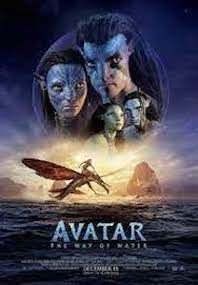

Avatar: The Way of Water Review- A Spectacle without Substance

Avatar: The Way of Water is a fantastic blockbuster with unmatched amounts of spectacle. As a film, it is bloated and should not really have been 3 hours long. There are more positives than negatives in this movie but it isn't without many small issues that make the overall movie a chore to watch at times.
Avatar 2 has some of the best CGI effects in any film. The colours and spectacle is on another level due to the attention to detail and effort that went into the CGI. The movie shines in the action scenes which are visually appealing and are well choreographed. The action scenes are all memorable and really showcase CGI can be used effectively. There are also some more quiet moments which show the how fantastic CGI can look. The entire visual style for this movie is perfect and there is not much that can be improved in this area.
There are many problems in Avatar 2 such as it's pacing, characters and plot. The overall plot feels like a generic action movie with no substance. The two main messages this movie sends are both cliche and overly forced. The message of family being everything is more cliche than it is forced, but it not a unique take on how family is everything and instead is like something I have seen hundreds of times before. The second message to stop whale fishing and definitely tacked on and it feels like it's a few too many years late to the debate about whale fishing. The characters for the most part are uninteresting, as they are underdeveloped and one-dimensional with no real motivation. Avatar 2 goes for 3 hours and although the beginning and ending are well paced the middle of the movie drags out. The middle is just a teen/family drama with the Avatar label over it. This middle area was not really necessary and could have been vital to character development, but it really didn't work in the way James Cameron wanted it to.
Although I think Avatar: The Way of Water is a flawed movie, I don't think it is bad. Overall, I enjoyed this movie and the CGI's spectacle, as well as the action scenes. This blockbuster won't be considered an all time classic, but it is still an enjoyable watch, as it is well made and there you can feel the passion from the project. Avatar 2 was a spectacle without substance.